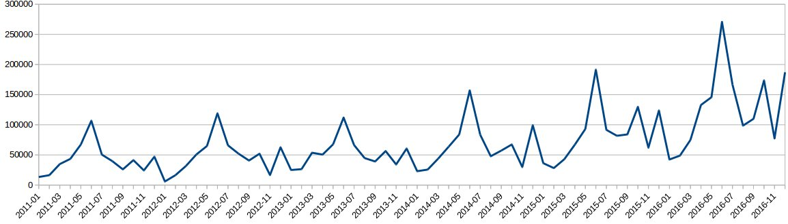
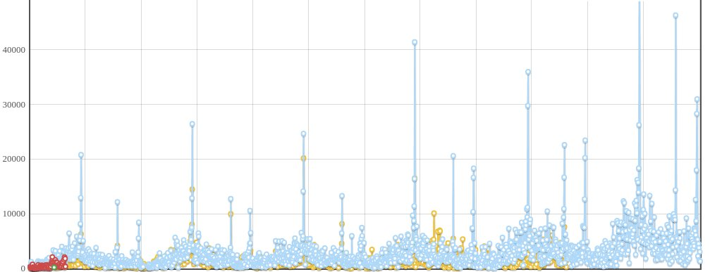
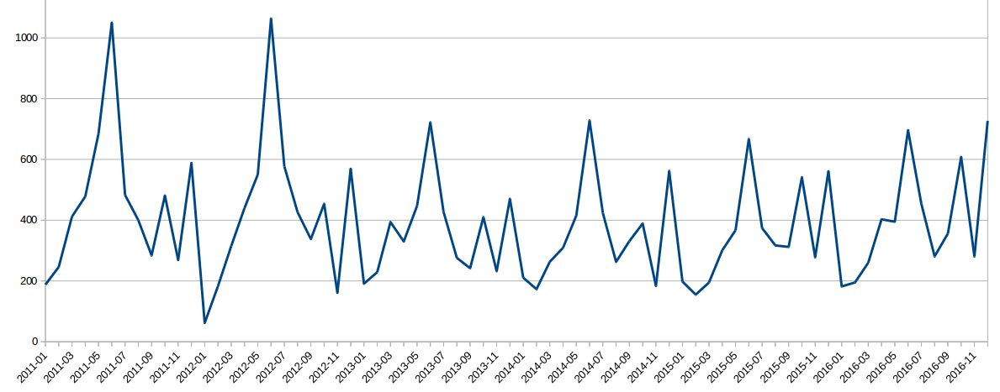
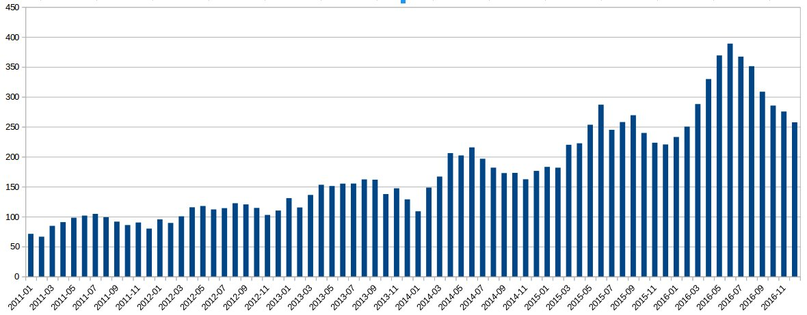

Retomé un sistema en PHP hecho entre 2010 y 2011 para un cliente. Es doloroso a los ojos, pero funciona y no necesita ningún arreglo. A cambio del trabajo me llevé los datos —anonimizados— para jugar un poco.
Se trata de las ventas históricas de un comercio mediano de ropa, principalmente masculina.
Ventas mensuales
Estas son las ventas mensuales a lo largo de los años. Es clarísima la repetición de picos por Día del Padre, Día de la Madre y Navidad.

Gráfico diario
Por si quedan dudas, el mismo dato con resolución diaria:

Para tener idea del tamaño del pico: el último Día del Padre el comercio facturó alrededor de 55.000 pesos en un solo día.
Sacando la inflación de la ecuación
Cuando uno trabaja con series largas en Argentina, ver pesos no alcanza. Por suerte el sistema también guarda estadísticas por cantidad de productos vendidos. Acá podemos quitar la inflación de la ecuación y mirar unidades:

Y la comparación entre ventas totales (en pesos) y unidades vendidas, mes a mes, entre 2011 y 2016:

Una lectura política
Pensemos en los resultados de las elecciones 2011, 2013 y 2015. Yo hubiera apostado a que en 2016 las ventas caían. Pero, mirando las unidades, no caen. Este negocio le vende a un público de clase media — y los datos sugieren que ese consumo, al menos en este caso particular, se mantuvo durante 2016.
Es solo un comercio, no una muestra representativa de nada. Pero es interesante cómo los datos privados de un negocio pueden funcionar también como termómetro complementario a las estadísticas oficiales.